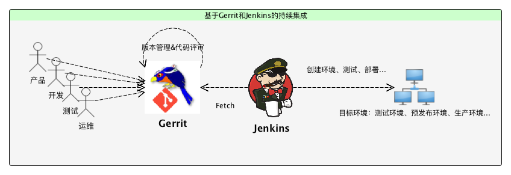

Git 协作开发上手指南
Generate HTML5 slideshows by landslide
V1.0
liyan 2017-11-15
从前有个工程师，想用 git …
Presenter Notes
小王的工作环境
用一台windows开发机；
用一台centos测试机；
团队用Jenkins做持续集成；
团队用gerrit做代码管理；
小王的学习路径
了解开发环境下这些服务都是怎样工作的 本篇文章
学习如何在Windows下
玩转 Git Bash
学习更多 gerrit 进行协同开发的知识
Gerrit 使用入门
练习在开发机与测试机上进行同步的开发测试
Presenter Notes
本文主要内容
1. 工作环境介绍
2. Gerrit与代码评审
3. 持续集成的实践
4. 总结
Presenter Notes
1. 工作环境介绍
持续集成环境

Presenter Notes
1.1 开发、测试到发布一览
Presenter Notes
2. Gerrit与代码评审
Presenter Notes
3. 持续集成实践
Presenter Notes
4. 总结
Presenter Notes
Table of Contents
Table of Contents
Git 协作开发上手指南
1
小王的工作环境
2
本文主要内容
3
1. 工作环境介绍
4
1.1 开发、测试到发布一览
5
2. Gerrit与代码评审
6
3. 持续集成实践
7
4. 总结
8
Help
Help
Table of Contents
t
Exposé
ESC
Full screen slides
e
Presenter View
p
Source Files
s
Slide Numbers
n
Toggle screen blanking
b
Show/hide slide context
c
Notes
2
Help
h